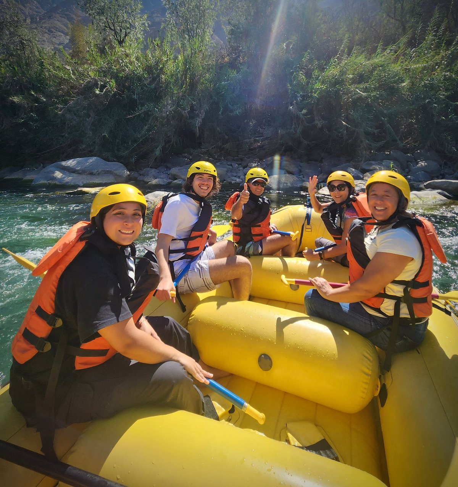

Welcome to Peru White Water Rafting! Our mission is to deliver safe, adrenaline-filled, and unforgettable river expeditions across the Andes and coastal valleys of Peru. From the thrilling rapids of the Cañete River in Lunahuana to the majestic waters of the Urubamba River in Cusco, our certified local guides ensure every adventure connects you with Peru's breathtaking landscapes and rich heritage.